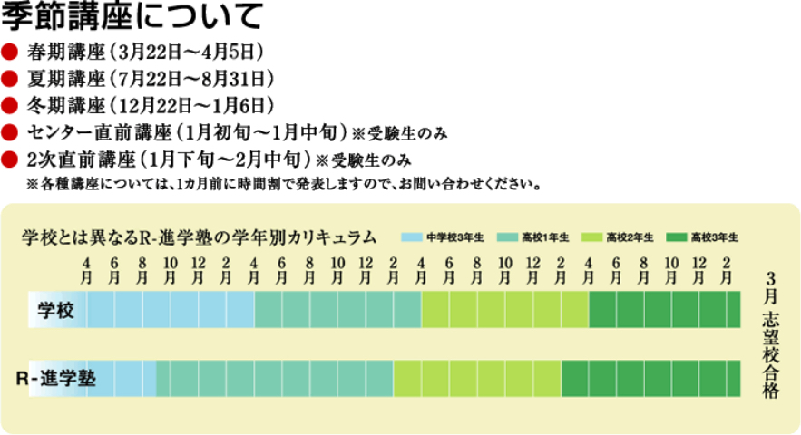

対応時間：月～土（10:00~22:00)
088-883-0111
対応時間：月～土（10:00~22:00)
088-883-0111
R-進学塾の４つのコースを紹介します。
本気で合格を目指す浪人生へ。
高知県に、全国と互角以上に戦える予備校を作りたい･･･それが私たちの思いです。
Ｒ－進学塾は2002年に、数理専門進学塾として産声を上げました。以来、優秀な生徒に恵まれ、東京大学・京都大学をはじめ、多くの大学に卒業生を送り出してきました。
一方で、力及ばず不合格となる生徒も少なからずおりました。彼らのうちの何名かは、浪人生としての一年をＲと共に過ごす決断をし、翌年見事に悔しさを晴らしてくれました。
しかし当時は、予備校としての認知が薄かったことがネックとなり、多くの生徒が県外の大手予備校を選択したことも事実です。彼らの中には、もちろん素晴らしい結果を残した者もおりました。が、環境の変化がもたらすストレスに対応できず、不本意な結果に終わる者もまた多かったのです。
地元にも、全国の受験生と互角に渡り合えるだけの環境があれば、彼らの結果も変わっていたのではないか･･･。そういう生徒を見るたびに、私たちもまた、彼らの悔しさを共有してきたのです。
他にはない完璧な授業で数・理を武器にすることにより高い合格実績を可能にします。今まで、学校・他の塾等で経験している授業は『解法を披露する』ことが殆どではなかったのではないでしょうか？Ｒの授業では、問題を見たとき、どこを読み、何をするのか・出来るのか！ということを徹底して指導していきます。解法の前の根本的な理解を養うことで、より多くの問題が同じ問題に感じるようにしていくのです。
一方で、＜Ｒの英語は弱いんじゃない？＞と噂されることもありますが、英語が本当に弱い場合、国公立医学部の合格実績はここまで出ないと思っています。すべては実績をご覧いただければご理解いただけると思います。
Ｒの授業の違い、まずは体験を通して実感してください。
確実に成績を上げることがＲの使命です。そのための魔法は授業だけであり、それをものにするために、生徒にはそれなりの時間を負担してもらうことになります。しかし、放課後、自宅で勉強というのも難しいのではないでしょうか？本気で勉強しようとしたとき、自習室も20：00までとなったら… 本気の生徒に本気で相手をしたいので、Ｒの自習室は23：00まで解放します。また、得意科目の強化・苦手科目の克服のため、18：30～21：40は現役コースの授業の併用も出来ます。
文系科目はともかく、理系科目の添削はほとんど意味をなしません。それは参考書を読む行為よりも劣ることと考えます。問題を解いているときに、何を思い・感じたのか？それをすぐに修正しないと本物の力はつきにくいのです。添削では、提出して帰ってくるまでのタイムラグが生じてしまうため、その時自分が何を思ったのかを忘れてしまい、結局解答を読むだけの勉強になってしまいがちです。数・理は解法を暗記することでは成績は上がりません。本質の理解を養うためには生徒の反応を見ながら教え込む必要があるのです。
休み時間はもちろん、21：40以降にもＲではとにかく質問を受け付けます。生徒と形だけの付き合いではなく、生で向き合い、言葉を交わすことで、本当の信頼関係が築かれます。この信頼により、生徒も本気で取り組み、結果、高い合格実績につながるのです。
大学受験という場においては、周りは皆がライバル。身近な人間を蹴落としてでも自分自身の合格をもぎ取ることが何よりも大切。受験は孤独との戦いだ…そんな風に考えている受験生も多いようです。
しかし、一人だけでもがんばれる人間はそんなに多くはありません。自分だけで定めた目標は、自分一人が諦めてしまえばそれでおしまいです。「次の定期試験こそは！！」そんな風に決意して、結局決意をしただけに終わった経験、ありませんか？
Ｒ-進学塾のコンセプトは「受験は団体戦」。Ｒの浪人生は共通の目的をもった最良の仲間だと考えます。互いに協力し合い、職員と浪人生みんなで合格をつかむ。それをＲ-進学塾としては望んでいます。
Ｒの浪人生は、10名程度の班に分かれます。浪人生活を続けるなかで、困ったことや迷うことがある…そんな時には各班の担任職員に相談して下さい。担任職員は定期的に面談を行い、個々の学習状況や生活状況を把握し、様々な点で的確なアドバイスをしていきます。生徒同士の絆だけでなく、職員と生徒の絆もまた、合格を勝ち取る為にとても重要なものです。
Ｒ進学塾では、17:30 までの時間を「予備校時間」、それ以降の時間を「放課後」としております。放課後には自由登録制で「現役生との合同授業」を開講しております。つまり放課後は、自習室で勉強する、合同授業に参加する、帰宅するなどのように自由度の高い時間としています。これに伴い、年間学費も個人に合わせて様々なプランが作成できますので、詳しくは資料請求やお問合わせをお願いいたします。
さらに詳しい情報は、直接お問い合わせください。
浪人部門合格実績を見る現役合格への道。
Rでは、全ての学年で大学受験に必要な学習が受けられます。
常に本番の受験を意識して取り組むことが、理解を定着させる最善の方法。「何故」「今」学習しているのか？目的意識をはっきり持てば、必要なことを最大に吸収することが可能となるのです。
「習ったら慣れろ！」これに尽きます。なぜ浪人生が受験に強いのか？後がないという精神力と演習量の絶対的な違いなのです。前期授業ではもう一度知識が常識になっているかどうかを確認。夏期講座以降は徹底的に演習します。このあたりから、最後に減点を防ぐ答案の書き方といったテクニックも指導し、万全の態勢で受験に臨んでもらいます。
【自習室の利用】月～土曜日の23時までいつでも利用いただけます。
(22時30分以降の自習は、保護者の方の送迎がある場合のみ許可）
いよいよ大学受験のターニングポイントとなる重要な１年間の始まりです。
大学入試で自身の力を存分に発揮するためには、
各科目にどうしても身につけておかなければならない 「基本事項」
があります。 それを確実に身につけ、 受験勉強の土台を固めることが、
この一年間のテーマです。 Ｒ-進学塾の高３生向けの受験対策授業の多くは、
高２での学習内容の上に立つものです。 高校２年生の一年間の過ごし方が、
そのまま高３の一年間、 ひいては入試結果へと直接繋がっていくのです。
【自習室の利用】月～土曜日の23時までいつでも利用いただけます。
(22時30分以降の自習は、保護者の方の送迎がある場合のみ許可）
中学校の学習内容に比べて、高校では知識が急に増加するので、知識に頼った「暗記」が学習だと勘違いしてしまいがち。しかし、大学入試問題を解くために必要なのは、知識を理解しておくことです。ただ問題を解説するのではなく「なぜこの問はこの解き方なのか」をセンターレベルで理解させ、2次試験に対応できる思考力をつける準備をします。
【自習室の利用】月～土曜日の23時までいつでも利用いただけます。
(22時30分以降の自習は、保護者の方の送迎がある場合のみ許可）
大学受験の英語・数学の基礎にあたる大部分は、中学校3年間の学習に含まれています。 しかし、受験まで時間がありすぎるため、生徒の意識が低く、しっかりと理解できていないのが現実。Rでは「なぜこれが大学受験に必要なのか」を生徒に意識させながら授業を進めます。その結果、生徒は目的意識を持ち、集中して授業を受ける姿勢になります。 中高一貫校(土佐中学)の生徒用に「土佐中学生コース」を開設しております。
中学生から始める大学受験
「英・数・理コース」「数・理コース」
大学受験においての基礎となる中学生レベルの範囲。この段階で「苦手」をなくし、「得意」としていきます。コースはご自身に併せて選択いただくことができます。
中学生からすでに難関大学受験を考えている生徒を募集しております。
このコースでは、入塾前に必ず生徒本人・保護者・当塾担当者による三者面談を実施します。
失礼だとは思いますが、当塾の指導方針に御理解頂いた上、現役での難関大学合格に向けて強い意志を持つと判断させて頂いた場合に正式に入塾となります。
難関大学へ現役合格するのためのカリキュラムです。学習内容と進度は他塾での中学生コースなどと比べると明らかに速いといえます。しかし、習熟不可能な事を無理強いするものではなく、学習意欲と学習習慣があれば問題なくこなせます。
少人数制にすることで、専任講師が生徒一人一人の性格を把握し、対応していくことが可能となります。また、同じ思いを持つ生徒が集まることにより、必然的に受験に適した環境が生まれます。大人数での一斉授業や個別授業では得ることのできない絶対的な環境は、必要不可欠だと考えております。
式の計算、図形、関数の定着
式の計算は、数学を勉強するうえでどの分野でも必ず必要なものです。いくら式に表せても最終的な答えが間違っていてはいけません。だからこそ頭の回転が早い中学生の時期から複雑な計算を早く、正確に解くことを身につける必要があります。
数学の特徴というものは、論理に基づいた考え方を重視されることだと考えております。というのもまず中学生になってすぐ登場する方程式にもあてはまるのではないでしょうか？「与えられた文章を読み、書かれていることを整理し、正確に数式にする」これこそが論理的思考の基礎と言えます。数学の問題において一般的に難問といわれても、『どの分野なのか』『出題者はどのキーワードを使ってほしいのか』の2点が分かればある正答への道しるべはできてきます。
英語の基礎となる文法、単語の定着
大学受験において、文系・理系、学部・学科に関係なく必ず受けなければならない最重要教科です。しかしながら、多くの受験生が英語に対し、苦手意識を持っているのが現状といえます。ではなぜ英語を苦手とする受験生が多いのでしょうか？このような生徒に共通している点があります。根本的なことが分からずに単語を暗記するだけの教科と思っているのです。
もちろん単語の暗記は必要不可欠なのですが、なんとなく覚えているだけでは使いこなすことはできません。例えば中学生のうちからよく見る前置詞などなんとなく使っているのが現状で、しっかり意味を理解していない生徒が大半です。大学受験に出題される文法の多くは、中学分野で学習しているのです。だからこそ
中学生の間に文法を覚え、考えて使いこなすことが出来るように授業を展開していきます。
『理科的な思考で考える力』を養う
小・中学校の理科は現象の「暗記」で対処できる割合が多いのに対して、高校範囲の理科は、現象の背景にある事柄を「理科的な思考で考える力」を問われるようになります。これは独学で身に着けることが難しく、効率よく身に着けてもうらためには、講師に確かな経験・実績とそのノウハウが必要となります。
理科においては、全国の進学校もそうですが、中学３年生から高校範囲の理科がスタート、高校２年生終了までに理科の全範囲を一通り学習し、それから本格的な受験対策となります。速いように思える進度もその準備さえできていれば、難なく進めていけます。
本格的な大学受験対策のスタート
中学生３年生からは、大学受験のためのカリキュラムがスタートします。
大学受験において現役生と予備校生ではどこに差が生まれるのかというと学習期間＝演習量の差です。
難関大学への現役合格には、現役生だけでなく予備校生もライバルとなります。したがって、浪人生との演習量の差を埋めるために、中学生３年生から大学受験対策のためのカリキュラムを始めます。中学１・２年生で学んできた大学受験の基礎があれば、すんなりとスタートをきることができます。
附属中学生だけの専用コース。
R-進学塾・附属中学生コースは、【附属中学】に通っている生徒の専用コースとなります。
追手前高校・小津高校・高知高専・土佐高校などへの受験を目指している方を対象です。
18時40分から始まる授業で部活動との両立も可能です。
これまでの大学受験で培ったノウハウをもとに、より分かりやすい・理解しやすい授業を展開していきます。
新年度生徒募集中です。
詳しくは直接お問い合わせください。
中学1年生/残席5名
中学2年生/15名程度
中学3年生/若干名
中学１年生
数学
英語
中学２年生
数学
英語
国語
理科
社会
※理科と社会については３学期の３月より
中学３年生
数学
英語
国語
理科
社会
授業開始 18:40〜
部活動との両立も可能です。
中学１年生
| 月 | 火 | 水 | 木 | 土 | 日 | |
| 18:40～20:00 | 数学 | 数学 | ||||
| 20:10～21:30 | 英語 | 英語 |
中学２年生
| 月 | 火 | 水 | 木 | 土 | 日 | |
| 18:40～20:00 | 英語 | 学校課題 | 英語 | |||
| 20:10～21:30 | 数学 | 数学 | 国語 |
中学３年生
| 月 | 火 | 水 | 木 | 土 | 日 | |
| 18:40～20:00 | 数学 | 英語 | 国語 | 数学 | ||
| 20:10～21:30 | 社会 | 学校課題 | 理科 | 英語 |
中学１年生17,500円
中学２年生19,500円
中学３年生21,500円
※月謝をお振り込みの場合は、手数料をご負担いただく代わりに500円引きとさせていただきます。
※入塾金 別途10,000円
{kind=link}